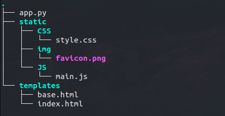
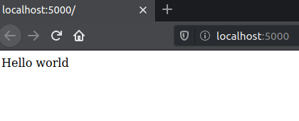
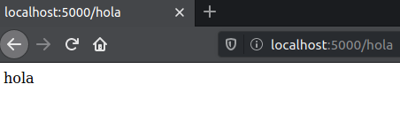
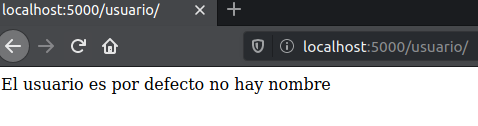
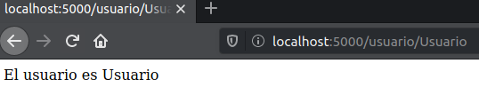
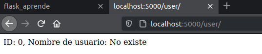

Escoge un tema para ir aprendiendo
Los temas van de forma secuencial o si tienes duda, simple presiona uno para empezar a ver los ejemplos
Estructura de flask
Antes de empezar a utilizar flask, su estructura que maneja es de la siguiente manera Primero tus archivos python y a la misma altura la carpeta templates en la cual iran tus html y tus archivos como css,imagenes, Javascript, en la carpeta static
Rutas
Unas de las principales caracteristicas de Flask, la cual es muy comodo es la creacion de rutas Consiste en crear una ruta, la cual se le asigan una metodo que se le asigna a ella. Una forma de enseñarlo seria de esta forma:
from flask import Flask
app = Flask(__name__)
#Aqui creamos una ruta con '/' indicamos la raiz
@app.route("/")
#con su metodo
def index
():
return
"Hello wordl"
if __name__ ==
"__main__" :
app.run(debug
= True
)

Rutas con nombre
Pero podemos crear rutas con diferentes nombres de una manera tan sencilla como hacer esto
#creamos otra ruta con otro nombre
#'/hola' indica la nueva raiz
@app.route("/hola")
def hola
():
return
"hola"

Rutas con variables
Podemos crear rutas por defectos o que reciban alguna variable, de tipo String, Int, Float y dicha variable ser utilizada en el metodo. Como se muestra a continuación, vemos que al no poner nada entra a una pagina con una variable por defecto (imagen 1), pero al darle una dato podemos ver el dato recibido en pantalla (imagen 2)
#esta ruta es por defecto
@app.route("/usuario/")
# ruta con el dato que recibe
@app.route("/usuario/<string:user>")
def usuario
(
user =
"por defecto no hay nombre"
):
return
"El usuario es " + user


Ejemplo de uso de las variables
Un ejemplo practico seria al recibir el id y el usuario, para asi mostrar una pagina personalizada para la persona
# Creamos lsa dos rutas una opcional y una donde si
entro
@app.route
("/user/")
@app.route
("/user/<string:id>/<string:username>")
def usuario
(
id =
0,
username =
"No existe"
):
return
"ID: {}, Nombre de usuario:
{}".format(id,username)


Templates
Los templates (platillas) es una forma de representar datos de forma legible ahora bien en Flask nos deja mostar estas platillas de forma mas practica, podemos llamar nuestro archivo desde una carpeta llamada Templates utilizando otro de sus metodos, el cual es render_template